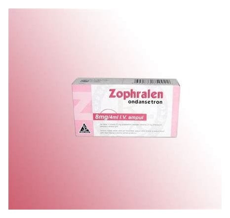

Zophralen 8 mg/4 ml IV Ampul

Ne için kullanılır
KT · Bölüm 1ZOPHRALEN ondansetron etkin maddesini içerir. Enjeksiyon ve ya infüzyon için berrak, renksiz ve steril çöz elti i çeren bir ve beş ampullük ambalajlar halindedir.
ZOPHRALEN anti-emetik olarak adlandı rılan bir ilaç grubuna dahildir. Bazı ilaç tedavileri (örn; kanser ilaçları) kendinizi hasta hissetmenize ve kusmanıza ne de n olabilir.
ZOPHRALEN ke ndinizi ha sta hissetmenizi veya kusmanızı önler. ZOPHRALEN, ilaç ve ışınla yapılan kanser tedavilerine bağlı bulantı ve kusmayı önlemek için kullanılır. Ayrıca, ameliyatlardan sonra ortaya çıkan bulantı ve kusmaları önlemek için de kullanılır.
Doktorunuz si ze ve sizin koşullarınıza u ygun olarak bu ilacı seçmiştir.
ZOPHRALEN, tedavi sonrası ke ndinizi hasta hissetmemeniz ve kusmanızı önlemek için verilmiştir.